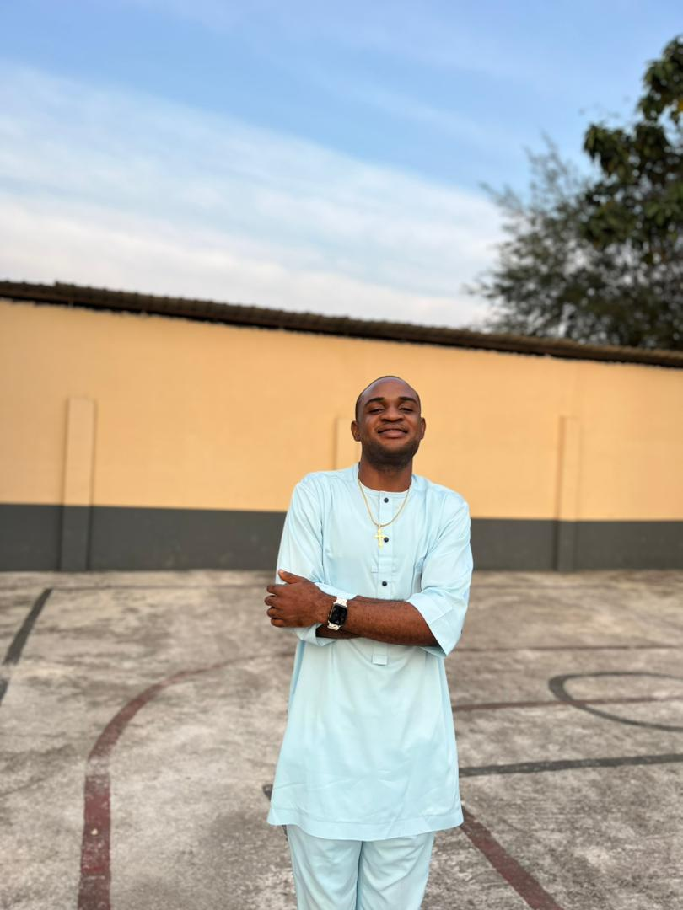

Okubalu Ebuka Prince
About Me

I am a student learning web development and dynamic web fundamentals. I enjoy coding, problem solving, and building websites.
My Interests
My interests include web design, JavaScript programming, responsive layouts, and learning modern technologies.